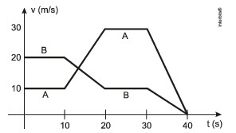

üîπ Ir para Problema 11 | üîπ Ir para Problema 13
(ENEM 2010 — 2ª aplicação)
O trecho da música, de Lenine e Arnaldo Antunes (1999), ilustra a preocupação com o trânsito nas cidades, motivo de uma campanha publicitária de uma seguradora brasileira. Considere dois automóveis, A e B, respectivamente conduzidos por um motorista imprudente e por um motorista consciente e atento à campanha citada. Ambos se encontram lado a lado no instante inicial t = 0 s, quando avistam um semáforo amarelo (que indica atenção, parando obrigatória ao se tornar vermelho).
O movimento de A e B pode ser analisado por meio do gráfico, que representa a velocidade de cada automóvel em função do tempo.
As velocidades dos veículos variam com o tempo em dois intervalos: (I) entre os instantes 10 s e 20 s; (II) entre os instantes 30 s e 40 s. De acordo com o gráfico, quais os módulos das taxas de variação da velocidade do veículo conduzido pelo motorista imprudente, em m/s², nos intervalos (I) e (II), respectivamente?

1) Identificar o motorista imprudente:
É o veículo (maiores variações de velocidade).
2) Aceleração média no intervalo (I): 10 s a 20 s
vi = m/s, vf = m/s, Δt = s ⇒ aI = (vf − vi) / Δt = m/s²
3) Aceleração média no intervalo (II): 30 s a 40 s
vi = m/s, vf = m/s, Δt = s ⇒ |aII| = |(vf − vi) / Δt| = m/s²
Assinale a alternativa correta: